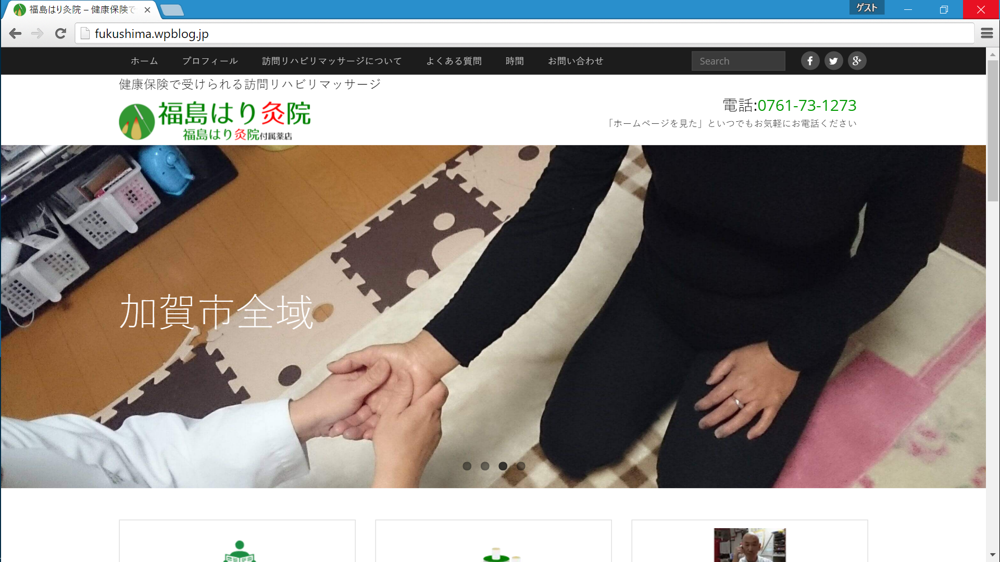

Profile
福嶋開人です．このページは工事中です．経歴
- 2002(H14)/04 小学校入学
- 2008(H20)/03 小学校卒業
- 2008(H20)/04 中学校入学
- 2011(H23)/03 中学校卒業
- 2011(H23)/04 石川工業高等専門学校 電子情報工学科 入学
- 2016(H28)/03 石川工業高等専門学校 電子情報工学科 卒業
- 2016(H28)/04 石川工業高等専門学校 専攻科 電子機械工学専攻 入学
Works
主な製作物の紹介をします．Contents
HTML5/CSS3 C C# MATLAB 実績HTML5/CSS3
さむねーたー HTML5/CSS3を用いてSNSサムネイルを製作するサイトを制作しました．- Original
- Cool & Cute
- Easy
製作期間は約2週間です．口パーツに遊び心を持たせています．HTML5/Canvasを使用しているのでレガシーブラウザでは正しく動作しない場合があります．
C
周波数特性を調べることができるCプログラムを書きました．
C#
体育の授業で使えるWindowsタブレット用採点プログラムを製作しました．(製作期間1か月)
エクセルに出力するのでデータ管理が容易にできます．
MATLAB
研究でMATLABプログラムを多用しています．
実績
実際にWordPressで商用ホームページを作り運営しています． 福島はり灸院 